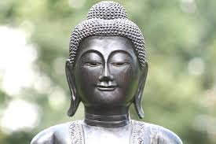
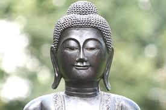

Kannauj District Religion Census 2011
As per official census 2011 and population data 2018 of Kannauj district, Hindu are majority in Kannauj state.
Total population of Kannauj district is 1,656,616 as per census 2011.
Hinduism constitutes 83.05% of Kannauj population.
Muslims are minority in Kannauj state forming 16.54% of total population.

Kannauj District Religion Census 2011
As per official census 2011 and population data 2018 of Kannauj district, Hindu are majority in Kannauj state.
Total population of Kannauj district is 1,656,616 as per census 2011.
Hinduism constitutes 83.05% of Kannauj population.
Muslims are minority in Kannauj state forming 16.54% of total population.
District Kannauj
Population - 1,656,616
Hindu-83.05 %
Muslim-16.54 %
Christian -0.08 %
Sikh -0.03 %
Buddhist -0.12 %
Jain -0.04 %
Others -0.00 %
Not Available -0.14 %
Towns in Kannauj District - Religion 2011
Towns Religion
Kannauj Hindu 62.53% muslim 36.60%
Chhibramau Hindu 73.33% muslim 25.83%
Gursahaiganj Hindu 55.78% muslim 42.66%
Samdhan Muslim 16.22% muslim 83.12%
Tirwaganj Hindu 81.93% muslim 17.86%
Saurikh Hindu 52.10% muslim 47.59%
Talgram Muslim 48.46% muslim 50.92%
Sikanderpur Hindu 88.71% muslim 11.03%